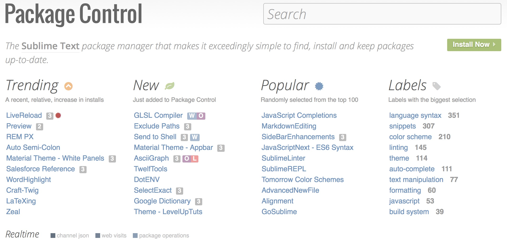

Your browser doesn't support the features required by impress.js, so you are presented with a simplified version of this presentation.
For the best experience please use the latest Chrome, Safari or Firefox browser.
Using Sublime Text Like a Rockstar!
Why is Sublime Text so popular?
Handy
Keyboard Shortcuts
- Search across files:
Ctrl + Shift + F
- Paste without Formatting:
Ctrl + Shift + V
- Command Pallet:
Ctrl + Shift + P
- Quick Open:
Ctrl + P
- Go to line:
Ctrl + G
- Hide/Show Sidebar:
Ctrl + K, Ctrl +B
- Layout (also under View → Layout):
Shift + Alt + [number]
Everyone...
Start Sublime Text!
Extending Sublime Text

- Like Drupal Modules and WordPress Plugins, ST has thousands of plugins
- Most of them free
- An
apt-get like system to install them, all inside ST
Install Package Control
Text plugins (called Packages) can be installed in multiple ways. Easiest way is Package Control.
- Go to http://packagecontrol.io/
- Copy the code for your version of ST
- In ST, press
Ctrl + `, paste code, press Enter
- ST asking for resart multiple times is normal!
Installing Packages
- In Sublime, open Command Pallete (
Ctrl + Shift + P)
- Type Install
- Enter name of package, select, hit enter
- Package is installed
Let's
Install Some Packages
- Emmet
- Sidebar Enhancements
- Drupal/WordPress
- Additional languages/libraries
- Zeal
- Emmet Livestyle
- Git/GitGutter
Thank you
This presentation was made with:
- Impress.js - A great open source library for making presentations with HTML5, CSS3. Check it out.
- GitHub Pages
- Sublime Text (of course!)